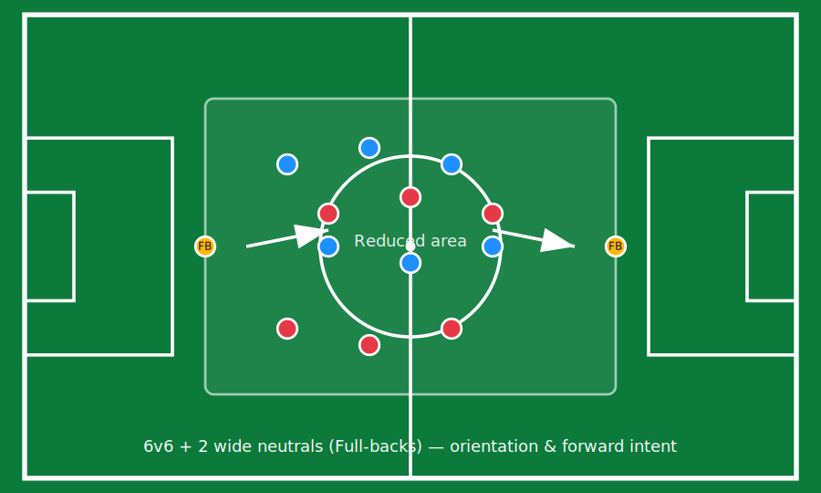
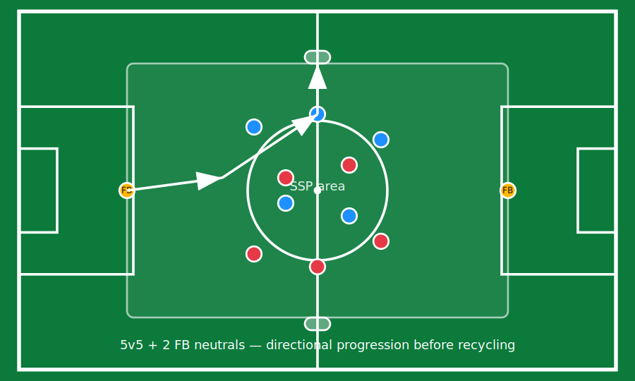
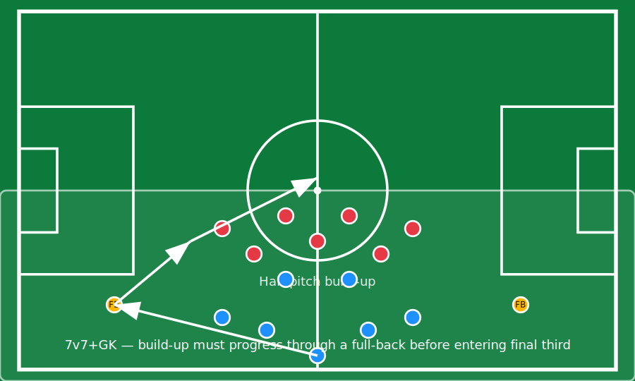

Training Tasks, Constraints, Coaching Points and Diagrams
Each task below is presented with a clear objective, constraints (when used), and the observation focus. Diagrams illustrate player distribution and the intended progression pathway.
Monday — PSS: Position Game (6v6 + 2 wide neutrals)
Reduced area. Full-backs operate as external support players to promote forward intention.Format
- 6v6 + 2 neutrals (the two full-backs).
- Reduced space: high information density.
- Objective: maintain possession while seeking forward solutions.
Coaching Points
- Scan explained: “look before you receive”.
- Open body shape toward the next line.
- First touch that invites progression (not immediate retreat).

Tuesday — SSP: Directional 5v5 + 2 FB neutrals (mini-goals)
FB-specific constraint: attempt a progressive action before recycling possession.Format
- 5v5 + 2 wide neutrals (full-backs).
- Directional play with two mini-goals.
- Moderate pressure: supports quick decision-making.
Constraints
- Full-back must attempt one progressive action (carry, line-breaking pass, overlap) before recycling.
- Backward pass allowed only after scanning and rejecting forward options.
Observation Focus
- Identification of internal corridors and timing to step in.
- Decision quality (not success rate).

Wednesday — SSP integrated into Collective: 7v7 + GK build-up via FB
Integration task: progression through a full-back before entering the final third.Format
- 7v7 + goalkeepers on half pitch.
- Opponent in a mid-block to simulate match reference.
- Build-up starts from the goalkeeper / centre backs.
Rule
- Build-up must progress through at least one full-back before entering the final third.
Key Interactions
- FB–interior midfielder support reminds continuity.
- When to overlap vs. step inside and combine.

Thursday — Game-based Collective: Free-play validation
Remove constraints to check whether trained behaviours emerge autonomously.Format
- 9v9 or 10v10, reduced pitch with full width.
- No explicit constraints related to full-back progression.
Staff Instruction
- Coaches avoid over-coaching. Interventions are brief and linked to the week’s coaching points.
- Observer tags moments where the full-back had a forward solution but recycled, and moments of successful progression.
Thursday is primarily an evaluation/validation session rather than a teaching session.